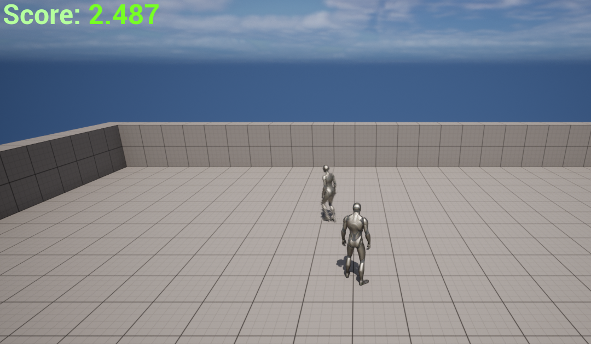

Input Output
The Project
This project was made in unreal engine using using blueprints and a add on called Arduino Serial Communication Plugin. The project used a external device called a arduino we used a gyroscope to calculate the angle at which the arduino was pointed. A LED lights with different colors to as an indicator. A microphone that detects your sound.
My Part
AI
In this project I worked on a enemy AI that would roam around the level mindlessly until you made a sound. The AI would detect how loud you are talking and would go towards you closer the louder you are. The AI would also make noises so you could know were it is when you made a noise as a response.
Controller
I made a custom controller made with a arduino, gyroscope and 5 LED's. I used the unreal engine blueprints to convert the gyroscopes angle into a float. Then I used that float as input to move the player. The second part of the controller were the 5 LED's which would light up one by one the closer you got to the enemy.
Other Inputs/Outputs
The last input was a microphone that was inside my headphones this input was converted in a base value dB and saved in a float. This input then triggered the enemy to move towards the player. The last output was a speaker that was also inside my headphones this was done by the build in unreal engine sound system.